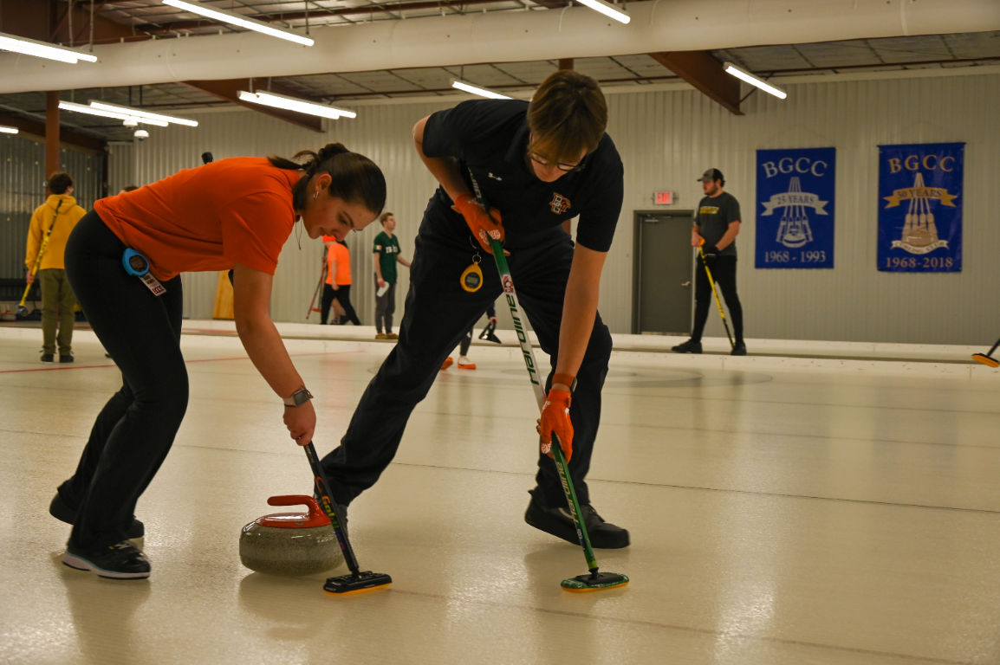
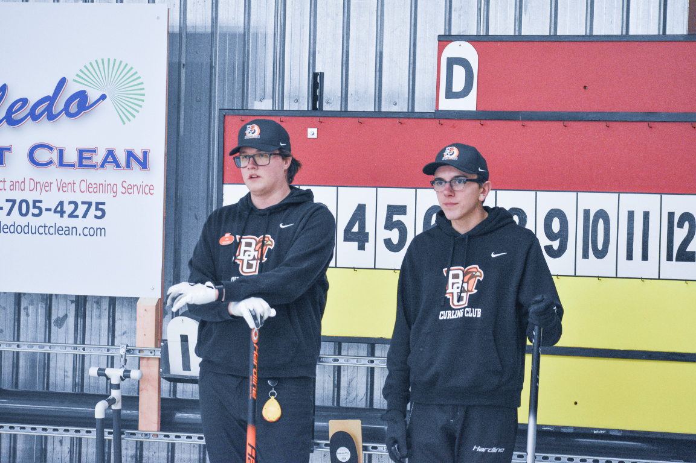

Bowling Green State University
B.S. in Computer Science, graduating May 1, 2027.
02 / About
I'm Joe, a fourth-year computer science student at Bowling Green State University. I like understanding how things work, and how to make them better.
My interests sit at the intersection of software engineering, practical problem-solving, and the communities I care about. Away from the screen, you'll usually find me curling, driving, or at a hockey game.
In the field


A few chapters
B.S. in Computer Science, graduating May 1, 2027.
Software engineering student worker following a summer technology internship.
Building technical skills while learning from the people and places around me.